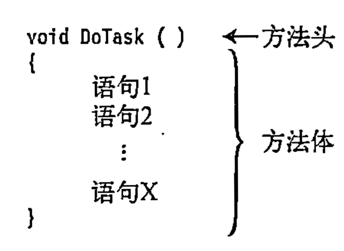

方法基础
很高兴你开始学习C#！方法是C#的核心组成部分，掌握它们对编程至关重要。下面是一个清晰的学习路径和关键知识点总结，帮你系统性地掌握C#方法：
一、方法是什么？
方法（Method） 是一个具有名字的代码块。
代码块：代码块是使用花括号包裹的指令的集合。代码块是一个由一条或多条语句组成的单元。
二、方法的特点
- 名字调用：可使用名字调用代码块。
- 参数调用: 调用方法时可以传入参数。
- 重复调用：可重复调用代码块。
- 特定任务：方法用于执行特定任务。
- 返回值：方法执行完毕后必须要有返回值。
三、方法的结构组成

方法有四大核心组成部分：
// 示例方法
public int Add(int a, int b) // ① 访问修饰符 ② 返回类型 ③ 方法名 ④ 参数列表
{
return a + b; // ⑤ 方法体（逻辑代码）
}
- 访问修饰符（如
public,private）→ 控制谁可以调用此方法 - 返回类型（如
int,void）→ 定义方法返回的数据类型（无返回用void） - 方法名 → 遵循驼峰命名法（如
CalculateTotal） - 参数列表 → 输入数据的通道（可为空）
- 方法体 → 包含实际执行的代码
三、初学者必须掌握的6种方法类型
1. 无参无返回值方法
2. 带参数的方法
3. 带返回值的方法
4. 方法重载（Overload）
同名不同参的方法
5. 可选参数方法
使用默认值简化调用
6. Lambda表达式（简洁方法）
适用于简单逻辑
四、关键进阶概念
| 概念 | 说明 | 代码示例 |
|---|---|---|
| 递归方法 | 方法调用自身 | int Factorial(int n) { ... } |
| ref/out参数 | 按引用传递（修改原值） | void Modify(ref int x) { x++; } |
| params参数 | 传递可变数量参数 | int Sum(params int[] nums) { ... } |
| 扩展方法 | 为现有类添加新方法（不需继承） | static class StringExtensions { ... } |
五、高效学习路径
- 基础阶段
- 练习创建/调用各种参数类型的方法
- 掌握
return和void的区别 -
尝试方法重载（同名不同参）
-
项目实践
-
进阶训练
- 实现递归算法（如斐波那契数列）
- 用
ref交换两个变量的值 - 为
string类创建扩展方法（如"abc".ReverseString()）
六、避坑指南
- ⚠️ 递归陷阱：忘记设置终止条件 → 导致栈溢出
- ⚠️ 命名冲突：避免方法与变量同名
- ⚠️ 参数顺序：传参时类型/顺序必须匹配
- ⚠️ Null引用：调用对象方法前检查是否为
null
七、学习资源推荐
- 交互式教程
- Microsoft Learn C#路径（官方免费）
-
Codecademy C#课程（实践导向）
-
工具推荐
- 使用LINQPad快速测试代码片段
-
在.NET Fiddle在线编写C#
-
书籍参考
- 《C#入门经典》 - 适合零基础
- 《C#本质论》 - 深入理解核心机制
重要提示：学习编程的核心原则是 “写代码 > 看代码” ！每学一个概念后，立即动手实现以下练习： 1. 写方法计算圆的面积（参数：半径） 2. 重载该方法使其支持输入直径计算 3. 用递归实现阶乘计算（5! = 120）
坚持每天写代码，你会快速掌握C#方法体系。遇到问题随时来问，祝你学习顺利！ 🚀
在 C# 中，string.Join() 和 string.Split() 是处理字符串的两种核心方法，它们的本质区别在于操作方向相反，且调用方式不同是由方法类型（静态 vs 实例）决定的。以下是详细解释：
一、核心区别对比表
| 特性 | string.Join() | string.Split() |
|---|---|---|
| 作用 | 连接多个字符串 | 分割单个字符串 |
| 输入 | 字符串集合 + 分隔符 | 单个字符串 + 分隔符 |
| 输出 | 单个合并后的字符串 | 字符串数组 |
| 方法类型 | 静态方法 | 实例方法 |
| 调用方式 | string.Join(分隔符, 数组) |
"字符串".Split(分隔符) |
| 示例 | string.Join("-", ["a","b"]) → "a-b" |
"a-b".Split('-') → ["a","b"] |
二、为什么调用方式不同？
1. string.Join() 是静态方法
- 原因：它需要操作外部数据（字符串集合），不依赖于某个具体的字符串实例
- 调用方式：通过类名
string直接调用 - 典型场景：合并数组、列表等集合
2. string.Split() 是实例方法
- 原因：它操作的是当前字符串自身的内容
- 调用方式：在字符串实例（变量或字面量）上调用
- 典型场景：解析文本数据
3. 为什么设计成这样？
| 方法类型 | 特点 | 代表方法 | 内存示意图 |
|---|---|---|---|
| 静态方法 | 不依赖对象状态，处理外部数据 | Join(), Concat() |
|
| 实例方法 | 依赖当前对象的状态 | Split(), Substring() |
"abc" → 处理自身内容 |
三、关键技术细节
▶ string.Join() 深入用法
// 连接不同类型集合（自动调用ToString()）
List<int> numbers = new List<int> {1, 2, 3};
string joined = string.Join("|", numbers); // "1|2|3"
// 连接对象属性
class Person {
public string Name {get; set;}
}
Person[] people = { new Person{Name="Alice"}, new Person{Name="Bob"} };
string names = string.Join(", ", people.Select(p => p.Name)); // "Alice, Bob"
▶ string.Split() 深入用法
// 多分隔符分割
string data = "apple;banana,cherry|date";
char[] delimiters = {';', ',', '|'};
string[] parts = data.Split(delimiters); // ["apple","banana","cherry","date"]
// 控制分割数量
string text = "one.two.three.four";
string[] result = text.Split('.', 2); // ["one", "two.three.four"]
// 移除空条目
string csv = "a,,b,c";
string[] items = csv.Split(',', StringSplitOptions.RemoveEmptyEntries); // ["a","b","c"]
四、如何区分静态方法 vs 实例方法？
| 特征 | 静态方法 | 实例方法 |
|---|---|---|
| 定义关键字 | 有 static 修饰符 |
无 static 修饰符 |
| 依赖对象状态？ | ❌ 不依赖特定对象 | ✅ 依赖当前对象内容 |
| 调用主体 | 类名（如 string.Method()） |
对象实例（如 str.Method()） |
| 典型字符串方法 | Join(), Format(), IsNullOrEmpty() |
Split(), Substring(), ToUpper() |
五、类比理解（生活例子）
| 场景 | Join() 类比 |
Split() 类比 |
|---|---|---|
| 操作 | 用胶水拼接碎片 | 用剪刀裁剪纸张 |
| 输入 | 碎片 + 胶水 | 整张纸 + 裁剪线 |
| 输出 | 完整作品 | 碎片集合 |
| 操作者角色 | 外部工具（胶水瓶） | 自身动作（纸张被剪） |
六、最佳实践建议
-
优先用
string.Join()代替循环拼接 -
分割时指定
StringSplitOptions -
处理大文本时用
StringBuilder+ 索引
💡 黄金法则：
- 当需要组合多个元素时 → 找string.Join()
- 当需要分解单个字符串时 → 用yourString.Split()
在 C# 中，方法除了静态方法和实例方法外，还有几种重要的分类方式。以下是完整的 C# 方法分类体系，包含每种类型的详细说明和示例：
一、按方法类型分类（核心分类）
| 类型 | 关键字 | 调用方式 | 特点 | 示例 |
|---|---|---|---|---|
| 静态方法 | static |
类名.方法名() |
不依赖对象实例 | Math.Sqrt(25) |
| 实例方法 | (无) | 对象.方法名() |
操作特定对象的状态 | "hello".ToUpper() |
| 扩展方法 | static + this |
对象.方法名() |
为现有类添加新方法 | list.Where(x => x > 5) |
| 构造方法 | (无) | new 类名() |
创建对象时初始化 | new Person("Alice", 30) |
| 终结器方法 | ~ |
自动调用 | 对象销毁前执行清理 | ~FileHandler() { ... } |
二、按功能用途分类
| 类型 | 特点 | 典型应用场景 | 示例 |
|---|---|---|---|
| 属性访问器 | 封装字段访问 | 实现数据验证和逻辑控制 | public int Age { get; set; } |
| 索引器方法 | 使对象支持数组式访问 | 自定义集合类 | public T this[int index] { ... } |
| 运算符重载 | 重定义运算符行为 | 自定义类型的数学运算 | public static Vector operator+(Vector a, Vector b) |
| 异步方法 | 使用 async/await 处理异步 |
I/O 操作、网络请求 | async Task<string> GetDataAsync() |
| 事件处理方法 | 响应事件触发 | GUI 编程、观察者模式 | button.Click += OnButtonClick; |
三、特殊方法类型详解
1. 扩展方法 (Extension Methods)
- 特点：为现有类型添加新方法而无需修改源码
- 定义要求：
- 静态类中的静态方法
- 第一个参数使用
this修饰
2. 局部方法 (Local Methods)
- 特点：方法内定义的方法（C# 7.0+）
- 优势：封装复杂逻辑，避免外部访问
3. 分部方法 (Partial Methods)
- 特点：跨多个文件定义方法（常用于代码生成场景）
- 限制：
- 必须返回
void - 隐式为
private
4. 异步方法 (Async Methods)
- 特点：使用
async和await处理异步操作 - 返回类型：
Task,Task<T>或ValueTask<T>
5. 记录方法 (Record Methods)
- 特点：针对记录类型(
record)的特殊方法 - 核心方法：
ToString()：自动生成友好输出Deconstruct()：解构方法
四、按参数传递方式分类
| 类型 | 关键字 | 特点 | 示例 |
|---|---|---|---|
| 值参数方法 | (无) | 默认方式，传递值副本 | void Process(int num) |
| 引用参数方法 | ref |
传递引用，修改影响原变量 | void Swap(ref int a, ref int b) |
| 输出参数方法 | out |
用于返回多个值 | bool TryParse(string s, out int result) |
| 参数数组方法 | params |
接受可变数量参数 | int Sum(params int[] numbers) |
| 可选参数方法 | 默认值 | 参数可省略 | void Log(string msg, bool isError = false) |
五、方法选择最佳实践
- 优先使用实例方法：当逻辑与对象状态相关时
- 使用静态方法：对于工具类、无状态操作（如
Math.PI） - 考虑扩展方法：扩展现有类型功能而不破坏封装
- 异步方法选择：
- 特殊场景：
- 对象初始化 → 构造方法
- 资源清理 → 终结器
- 事件处理 → 事件处理方法
六、完整方法定义模板
[访问修饰符] [static/async/virtual等] [返回类型] 方法名(
[参数类型] 参数名,
[ref/out/params] [可选参数] ...
)
{
// 方法体
[return 值;] // 非void方法需要
}
// 示例：包含多种特性
public static async Task<string> ProcessAsync(
this string input,
ref int counter,
bool log = true
)
{
counter++;
if(log) Console.WriteLine($"Processing: {input}");
return await Task.Run(() => input.ToUpper());
}
掌握这些方法类型及其适用场景，能帮助你写出更清晰、更高效的 C# 代码。每种方法类型都有其特定用途，理解它们的设计哲学比死记硬背更重要！